Examples of pomsets from Podkopaev-al:draft
Table of Contents
- 1. Message-Passing (MP)
- 2. Load Buffering (LB)
- 2.1. With relaxed modifiers (LB rlx)
- 2.2. With release and relaxed modifiers (LB rel+rlx)
- 2.3. With acquire and relaxed modifiers (LB acq+rlx)
- 2.4. With release, acquire, and relaxed modifiers (LB rel+acq+rlx)
- 2.5. Notes
- 2.6. With relaxed modifiers and usage of values (LB rlx+use)
- 2.7. With relaxed modifiers and join (LB rlx+join)
- 3. Coherence of Read-Read (CoRR)
- 4. Independent Reads of Independent Writes (IRIW)
- 5. Locks
- 6. Write-to-Read Causality (WRC)
- 7. Write Reorder (WR, 2+2W from Lahav-al:POPL16)
- 8. Some release/acquire examples
1 Message-Passing (MP)
1.1 With relaxed modifiers (MP rlx+na)
f_rlx := 0; d_na := 0; d_na := 5; || repeat f_rlx end; f_rlx := 1 || r = d_na
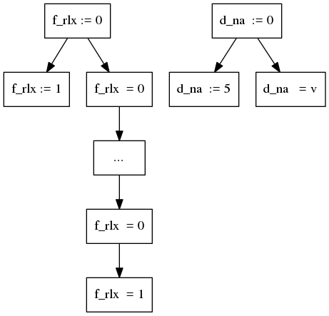
1.2 With relaxed and release modifiers (MP rel+rlx+na)
f_rlx := 0; d_na := 0; d_na := 5; || repeat f_rlx end; f_rel := 1 || r = d_na
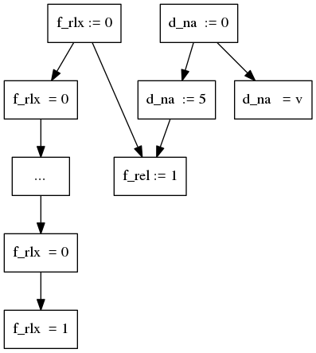
1.3 With relaxed and acquire modifiers (MP acq+rlx+na)
f_rlx := 0; d_na := 0; d_na := 5; || repeat f_acq end; f_rlx := 1 || r = d_na
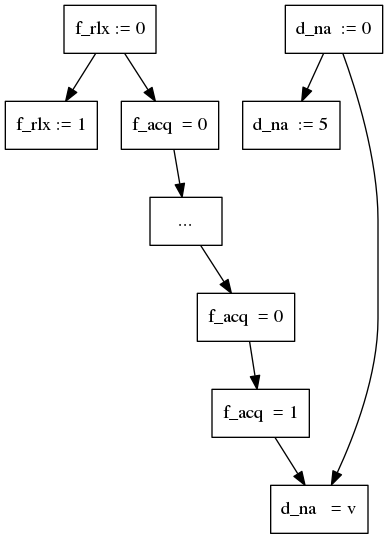
1.4 With release and acquire modifiers (MP rel+acq+na)
f_rel := 0; d_na := 0; d_na := 5; || repeat f_acq end; f_rel := 1 || r = d_na
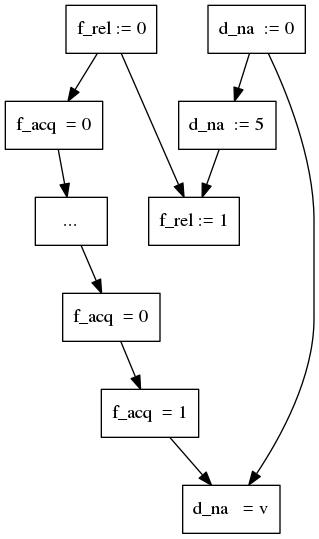
1.5 With release, acquire, and relaxed modifiers (MP rel+acq+na+rlx)
f_rel := 0; d_na := 0; d_na := 5; || repeat f_acq end; f_rel := 1; || r = d_na f_rlx := 2 ||
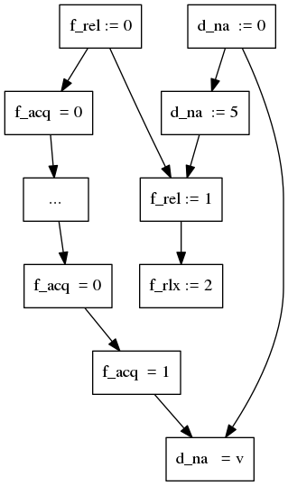
2 Load Buffering (LB)
2.1 With relaxed modifiers (LB rlx)
x_rlx := 0; y_rlx := 0; r1 = y_rlx; || r2 = x_rlx; x_rlx := 1 || y_rlx := 1
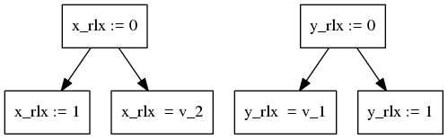
2.2 With release and relaxed modifiers (LB rel+rlx)
x_rlx := 0; y_rlx := 0; r1 = y_rlx; || r2 = x_rlx; x_rel := 1 || y_rel := 1
In C11 it is possible to get r1 = r2 = 1 (v_1 = v_2 = 1).
Because of that there should be no edges between reads and writes
in left and right subthreads.
However, this behavior isn't
observable on x86-TSO, Power, and (likely) ARM architectures
under sound compilations schemes to them.
2.3 With acquire and relaxed modifiers (LB acq+rlx)
x_rlx := 0; y_rlx := 0; r1 = y_acq; || r2 = x_acq; x_rlx := 1 || y_rlx := 1
In C11 it is possible to get r1 = r2 = 1 (v_1 = v_2 = 1).
Because of that there should be no edges between reads and writes
in left and right subthreads.
However, this behavior isn't
observable on x86-TSO, Power, and (likely) ARM architectures
under sound compilations schemes to them.
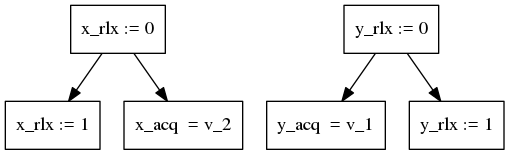
2.4 With release, acquire, and relaxed modifiers (LB rel+acq+rlx)
x_rlx := 0; y_rlx := 0; r1 = y_acq; || r2 = x_rlx; x_rlx := 1 || y_rel := 1
Problem: C11 outlaws r1 = r2 = 1 (v_1 and v_2) outcome for the snippet,
but the pomset doesn't address it.
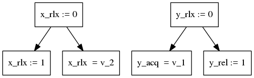
2.5 Notes
As it stated in LB rel+rlx and LB acq+rlx sections,
it should be possible to get r1 = r2 = 1 executing the LB snippet with
corresponding modifiers (rel+rlx or acq+rlx).
But not in case of LB rel+acq+rlx. The cause of such restriction is the sw
(synchronizes-with) edge, which appears in the corresponding graph,
see Fig. 12.
Such edge might connect only release writes and acquire reads, which isn't the case
in LB rel+rlx and LB acq+rlx.
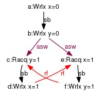
Figure 10: LB acq+rlx (slightly modified output of cppmem)
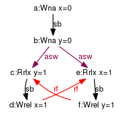
Figure 11: LB rel+rlx (slightly modified output of cppmem)
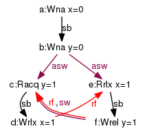
Figure 12: Incorrect LB rel+acq+rlx graph, which violates acyclicity of happens-before (sb+sw+sb) + read-from (rf) (slightly modified output of cppmem)
3 Coherence of Read-Read (CoRR)
3.1 With relaxed modifiers (CoRR rlx)
x_rlx := 0;
x_rlx := 1 || x_rlx := 2 || r1 = x_rlx; || r3 = x_rlx;
|| || r2 = x_rlx || r4 = x_rlx
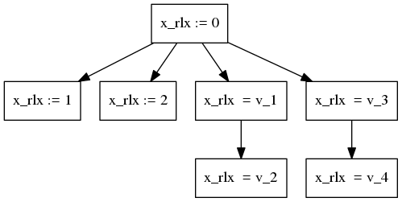
It should be impossible to get r1 == r4 == 1 and r2 == r3 == 2,
or r1 == r4 == 2 and r2 == r3 == 1.
3.2 With release and acquire modifiers (CoRR rel+acq)
x_rel := 0;
x_rel := 1 || x_rel := 2 || r1 = x_acq; || r3 = x_acq;
|| || r2 = x_acq || r4 = x_acq
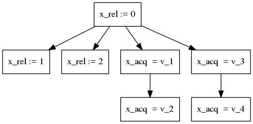
It should be impossible to get r1 == r4 == 1 and r2 == r3 == 2,
or r1 == r4 == 2 and r2 == r3 == 1.
4 Independent Reads of Independent Writes (IRIW)
4.1 With relaxed modifiers (IRIW rlx)
x_rlx := 0; y_rlx := 0;
x_rlx := 1 || y_rlx := 1 || r1 = x_rlx; || r3 = y_rlx;
|| || r2 = y_rlx || r4 = x_rlx
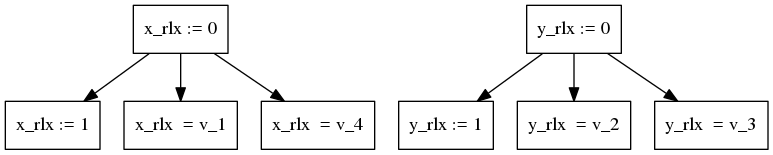
All outcomes are possible (v_1, v_2, v_3, v_4 in {0, 1}).
4.2 With release and acquire modifiers (IRIW rel+acq)
x_rel := 0; y_rel := 0;
x_rel := 1 || y_rel := 1 || r1 = x_acq; || r3 = y_acq;
|| || r2 = y_acq || r4 = x_acq
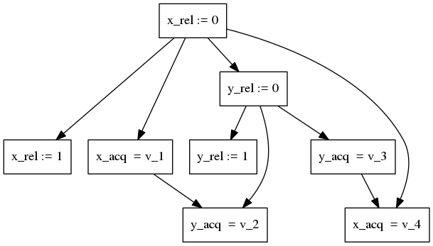
All outcomes are possible (v_1, v_2, v_3, v_4 in {0, 1}).
4.3 With SC modifiers (IRIW sc)
x_sc := 0; y_sc := 0;
x_sc := 1 || y_sc := 1 || r1 = x_sc; || r3 = y_sc;
|| || r2 = y_sc || r4 = x_sc
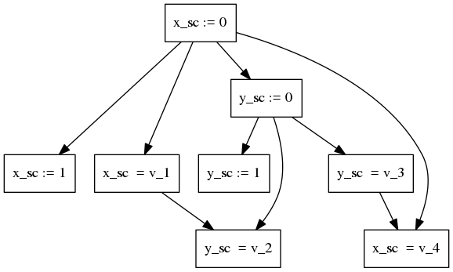
The v_1 == v_3 == 1 and v_2 == v_4 == 0 outcome is forbidden,
but it should be outlawed at execution level (not in pomsets).
5 Locks
A couple of locks, Dekker's and Cohen's ones, are presented in this section. They are intended to provide a mutual exclusion of two threads.
The Dekker's one is known to fail it for release-acquire modifiers,
thus the corresponding snippet has an undefined behavior, because of
a data race on d location.
In contrast, the Cohen's lock does provide the mutual exclusion.
It uses non-deterministic choice operator.
The pomset semantics coincides exactly with the C11 standard on the locks.
5.1 Dekker's lock
x_rel := 0; y_rel := 0; d_na := 0; x_rel := 1; || y_rel := 1; if y_acq == 0 || if x_acq == 0 then d_na := 5 || then d_na := 6 else skip || else skip fi || fi
One of the possible pomsets. It leads to undefined behavior,
because of the datarace on d location.
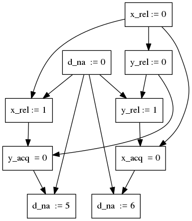
5.2 Cohen's lock
x_rel := 0; y_rel := 0; d_na := 0; x_rel := choice(1, 2); || y_rel := choice(1, 2); repeat y_acq end; || repeat x_acq end; if x_acq == y_acq || if x_acq != y_acq then d_na := 5 || then d_na := 6 else skip || else skip fi || fi
5.2.1 If x_rel := choice(1, 2) and y_rel := choice(1, 2) have written the same value (v_1 == v_2).
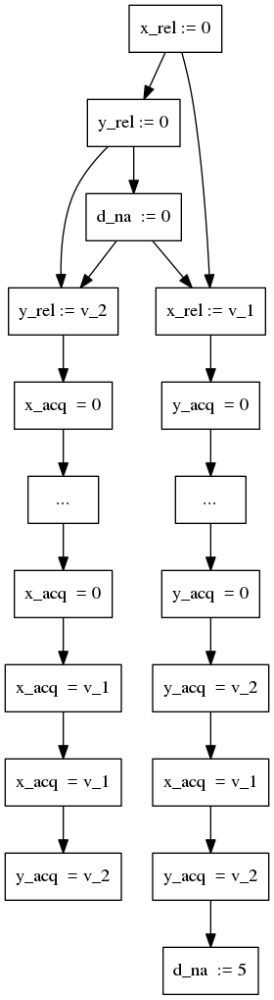
5.2.2 If x_rel := choice(1, 2) and y_rel := choice(1, 2) have written different values (v_1 != v_2).
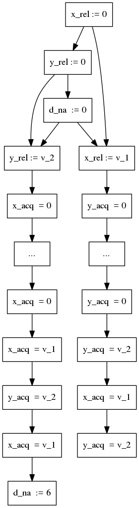
6 Write-to-Read Causality (WRC)
6.1 With release and acquire modifiers (WRC rel+acq)
x_rel := 0; y_rel := 0;
x_rel := 1 || r1 = x_acq; || r2 = y_acq;
|| y_rel := r1 || r3 = x_acq
It's impossible to get r2 == 1 and r3 == 0
(v_2 == 1 and v_3 == 0) at the same time.
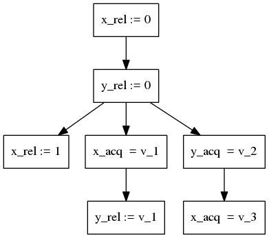
6.2 With relaxed modifiers (WRC rlx)
x_rlx := 0; y_rlx := 0;
x_rlx := 1 || r1 = x_rlx; || r2 = y_rlx;
|| y_rlx := r1 || r3 = x_rlx
It's possible to get r2 == 1 and r3 == 0
(v_2 == 1 and v_3 == 0) at the same time.
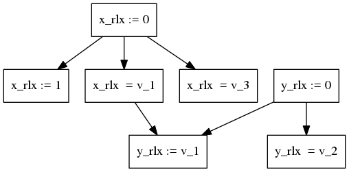
7 Write Reorder (WR, 2+2W from Lahav-al:POPL16)
7.1 With release and acquire modifiers (WR rel+acq)
x_rel := 0; y_rel := 0; x_rel := 1; || y_rel := 1; y_rel := 2; || x_rel := 2 r1 = x_acq; r2 = y_acq
The C11 standard allows to get r1 == r2 == 1
(v_1 == v_2 == 1) here, but it's forbidden
by SRA [Lahav-al:POPL16], as well as by the pomset semantics.
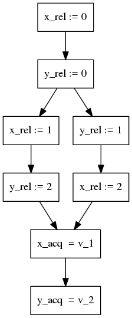
7.2 With relaxed modifiers (WR rlx)
x_rlx := 0; y_rlx := 0; x_rlx := 1; || y_rlx := 1; y_rlx := 2; || x_rlx := 2 r1 = x_rlx; r2 = y_rlx
It's possible to get r1 == r2 == 1 (v_1 == v_2 == 1) as in
the C11 standard.
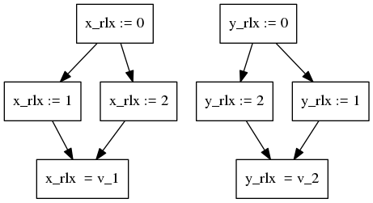
8 Some release/acquire examples
8.1 With release and acquire modifiers (Ex rel+acq)
x_rel := 0; y_rel := 0; x_rel := 1; || y_rel := 2; y_rel := 1; || r2 = x_acq r1 = y_acq ||
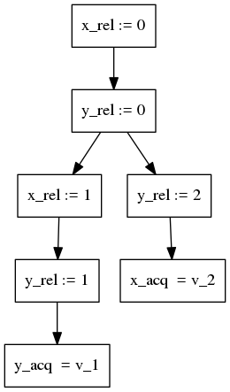
Problem: The C11 allows to get r1 = 2; r2 = 0 (v1 = 2; v2 = 0) (see a corresponding Batty-style graph below).
Unfortunately, this behavior isn't observable under the pomset semantics with
the current definition of executions.
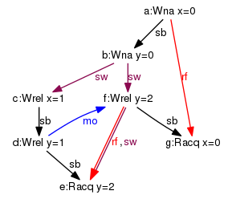